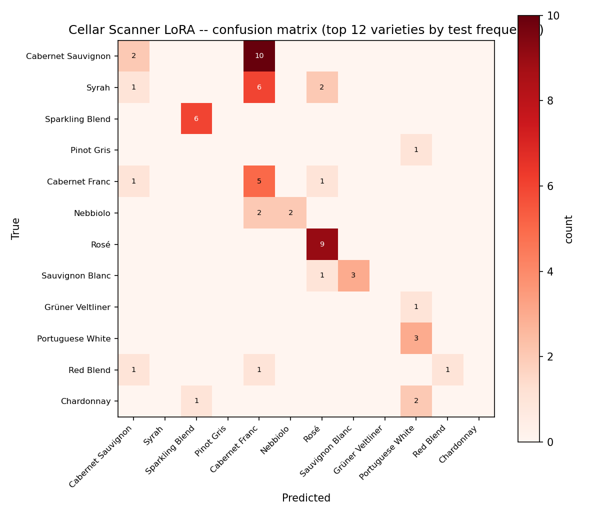
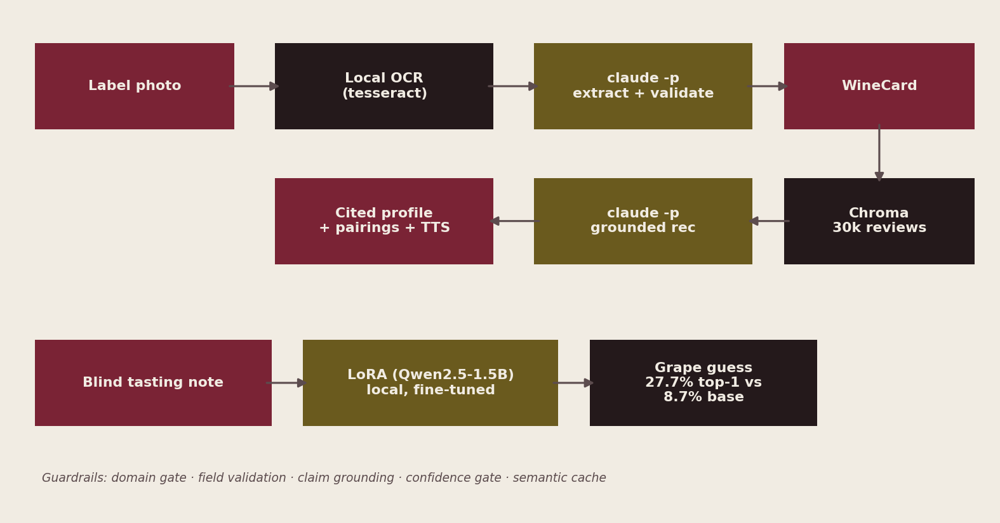

Local OCR, grounded retrieval and a fine-tuned grape classifier
Cellar Scanner reads a wine label with local OCR and Claude, retrieves similar wines from 30,000 Wine Enthusiast reviews, and keeps only the sentences it can ground in those reviews. Its Blind Taste Mode runs a Qwen2.5-1.5B model, LoRA fine-tuned with MLX on Apple Silicon, that guesses the grape from a tasting note with the grape name masked out: 27.7% Top-1 across 40 varieties, against 8.7% for the untuned base model and 23.0% for Claude prompted zero-shot.
Top-1 accuracy of the LoRA model on 40 grape varieties, 3.2 times the base model's 8.7%.
macro-F1 for the LoRA model, against 0.119 for Claude zero-shot and 0.021 for the base model.
per note on the laptop, against 69.6 s for Claude through the CLI.
of notes named their own grape and were masked before training and scoring.
The benchmark
training/bench_classifier.py scores three systems on the
held-out test split (2,024 rows), shuffled with a fixed seed. The base and LoRA
models were run on the first 300 rows, because mlx_lm.generate
reloads the model on every call; Claude was run on the first 200 of those same rows.
| System | N | Top-1 | Top-3 | Macro-F1 | Latency | Cost/1k |
|---|---|---|---|---|---|---|
| Base Qwen2.5-1.5B | 300 | 8.7% | 14.3% | 0.021 | 4.3 s | $0 |
| + LoRA (this project) | 300 | 27.7% | 27.7% | 0.253 | 10.6 s | $0 |
| Claude, zero-shot | 200 | 23.0% | 30.5% | 0.119 | 69.6 s | Subscription |
The LoRA model is ahead of Claude on Top-1 by 4.7 points. Because Claude's 200 notes are a subset of the LoRA model's 300, the two can be compared note by note: on those 200, the LoRA model was right on 55 (27.5%) and Claude on 46 (23.0%). Of the 67 notes only one of them got right, the LoRA model took 38 and Claude 29, and an exact sign test puts that split at p = 0.33. It is a lead that sampling noise could erase. The macro-F1 gap (0.253 against 0.119) is wider, which says the LoRA model's hits are spread across more varieties. Claude is ahead on Top-3 (30.5% against 27.7%).
The LoRA model's Top-1 and Top-3 are identical because it never fills
ranks 2 and 3. Its training target was the single line
"1. {variety}", so it learned to give one answer and stop. A
retrain with three-item targets would let it use the extra guesses.
Your turn
These are the 200 held-out notes that all three systems were scored on, with the grape masked exactly as the models saw it. Pick a grape, then see what the LoRA model and Claude answered. The models chose from all 40 varieties; you get four options, which always include the right answer and both models' picks, so your job is easier than theirs.
Note 1 of 200
Play a few notes to start a tally.
Notes, true varieties and answers from eval/blind_samples.json, which
training/paired_check.py writes from the cached benchmark outputs. Notes come up in a
random order. On all 200, the LoRA model was right on 55 and Claude on 46.
Where it goes wrong
The most frequent confusions in the LoRA model's test predictions pair grapes that share a style: Cabernet Sauvignon read as Cabernet Franc, Nebbiolo read as Sangiovese, and a group of aromatic or fresh whites read as Viognier.
Most common confusions, LoRA model
From eval/benchmark.md, 300-row subsample.

Making the task blind
Many reviews name the grape outright ("this Cabernet shows..."), which
would turn blind tasting into string matching. A regex masks each
variety name and its common synonyms before training and scoring; it
fired on 20.1% of the 41,389 rows, and the rate is written to
eval/masking_report.json.
The dataset keeps the 40 varieties with at least 500 reviews, caps each
at 1,200, and splits by wine title so no wine appears in both train and
test (37,289 train, 2,076 validation, 2,024 test; the leakage check in
eval/dataset_card.json passed).
Three numbers looked wrong during the build, and each was a bug. The first index build reached a third of its 30,000 target until a water-filling allocation replaced a flat per-variety quota. Claude first scored below the untrained base model because markdown-wrapped answers failed an exact string match; answers are now matched against the class list. And the first benchmark read the test file in order and covered only 6 of 40 varieties; a seeded shuffle fixed it (40 of 40 in the 300-row subsample) and changed the headline result.
The training run
The adapter was trained with mlx_lm.lora on the 4-bit
Qwen2.5-1.5B-Instruct: 12 layers, batch 4, 800 iterations,
learning rate 1.5e-4, sequence length 768. That is 3.96M trainable
parameters (0.256% of the model), 3,200 training examples seen, and a
peak of 4.4 GB of memory. Validation loss fell from 3.895 at the start to
1.154 at iteration 600 and finished at 1.196.
training/train_run.log: training loss every
20 iterations, validation loss every 100. Hover to read a checkpoint.The scanner
tesseract reads the label locally. One claude -p
call checks that the photo is a wine label and extracts a structured card
(producer, grape, vintage, region). The card queries a Chroma index of
30,000 reviews, embedded with sentence-transformers and sampled across
every represented variety. A second Claude call writes a profile and
pairings from the retrieved reviews, and a token budgeter records what
went into that prompt.

Limitations
The LoRA-versus-Claude gap on Top-1 is within sampling noise (sign test p = 0.33 on the 200 notes both saw). The LoRA model cannot rank a second or third guess. Training saw 3,200 of the 37,289 training rows; whether a longer run would help is untested here. The labels are the dataset's variety field, which mixes grapes with blends and styles (Red Blend, Rosé, Port), so some "errors" are arguable.
There is no hosted demo: the app is a Gradio interface run locally with
python app.py. Label reading depends on OCR quality; when the read is weak, the
confidence gate asks for a retake.
How it was built
mlx_lm.lora on Apple Silicontesseract OCR, then claude -p for the domain check and extractionclaude -p on a Claude subscription, so no per-token costapp.py): Scan and Blind Taste Modetraining/bench_classifier.py; results in eval/. training/paired_check.py re-scores the cached outputs on the 200 shared notes